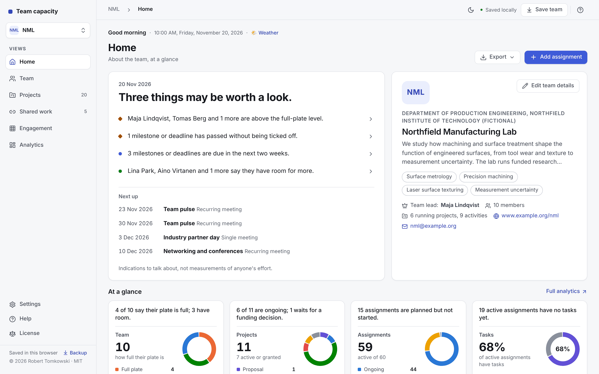
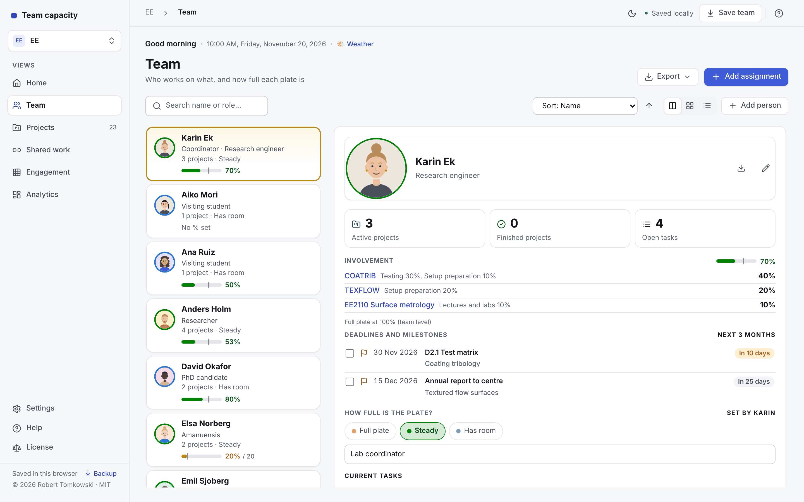
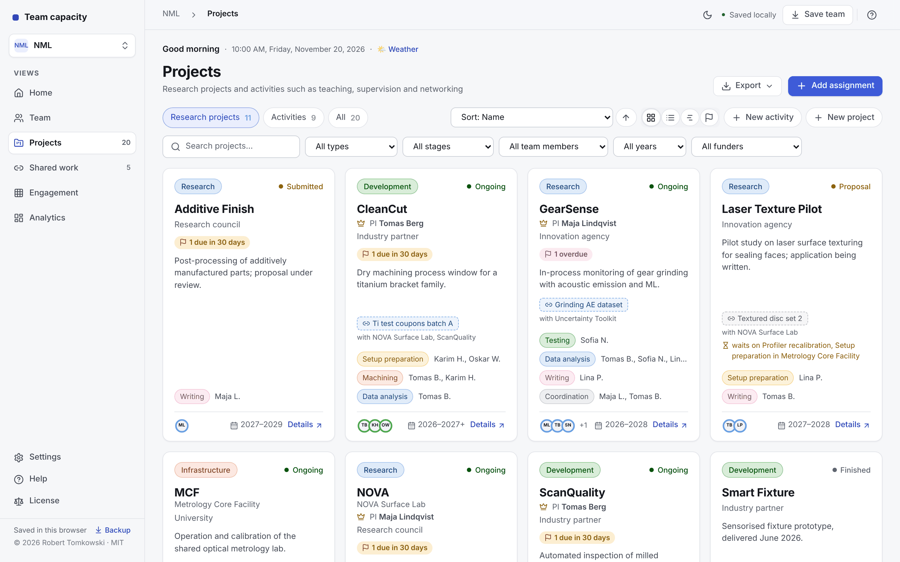
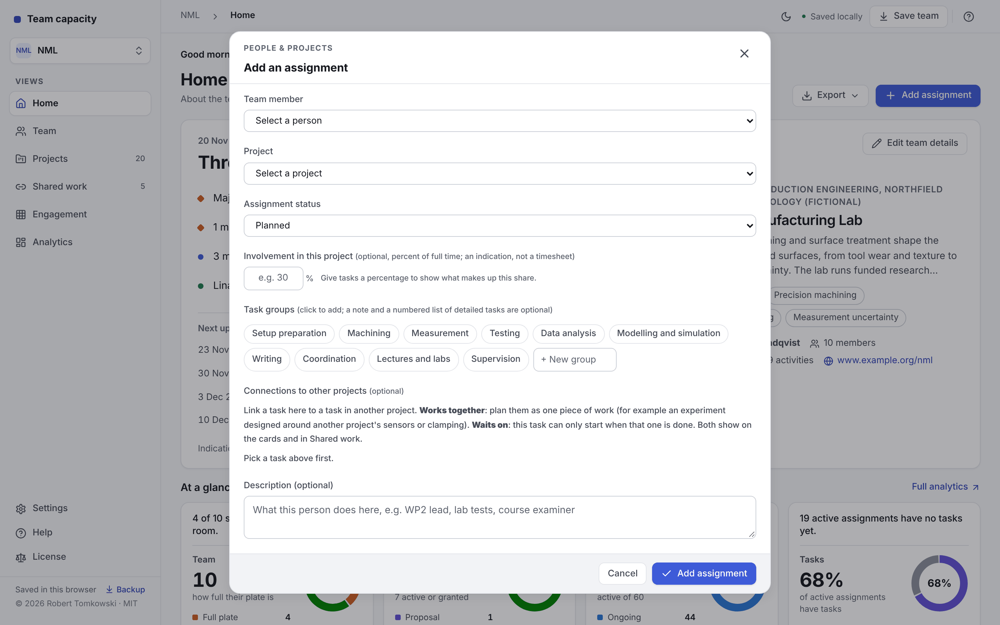
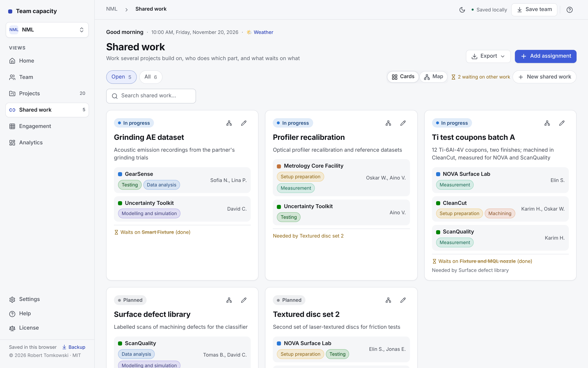
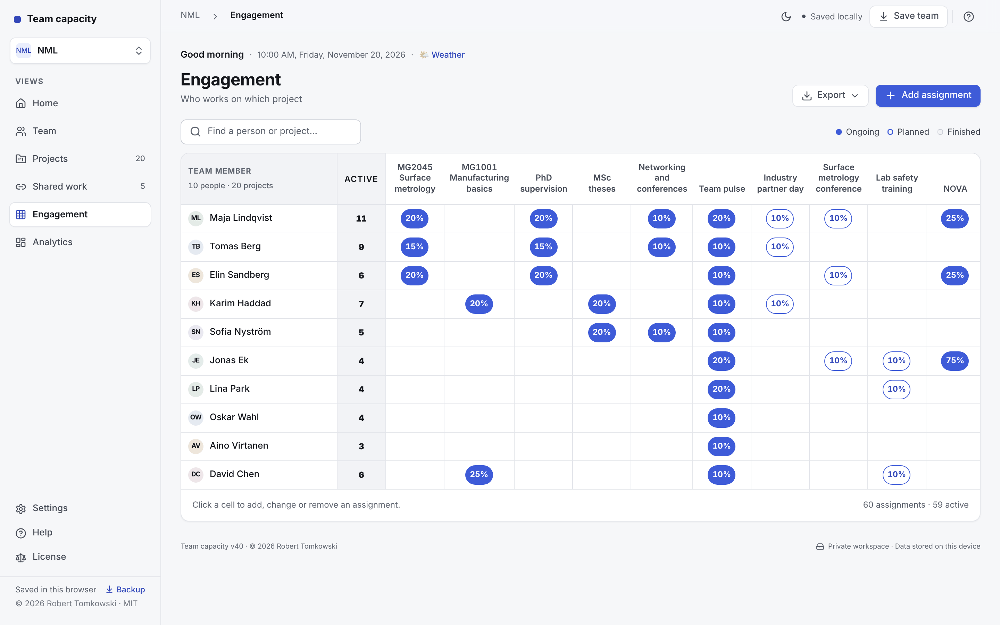
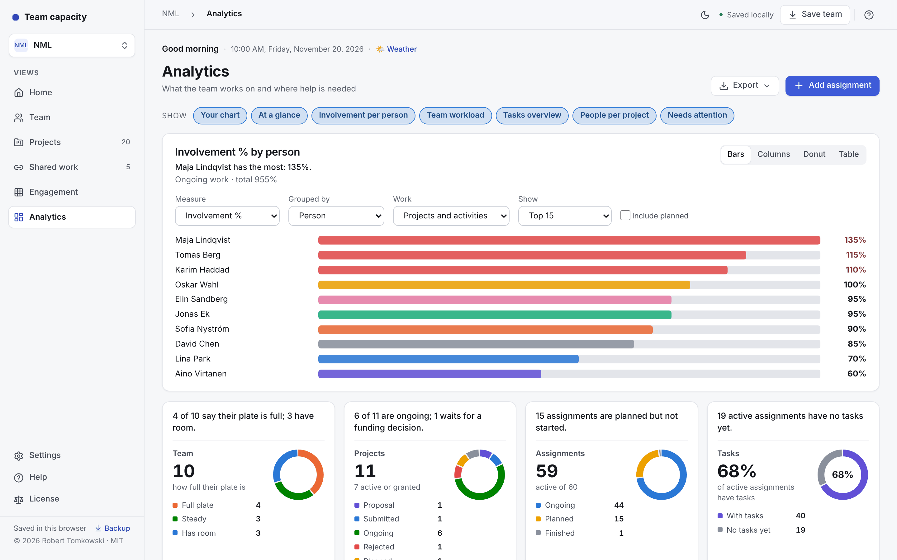
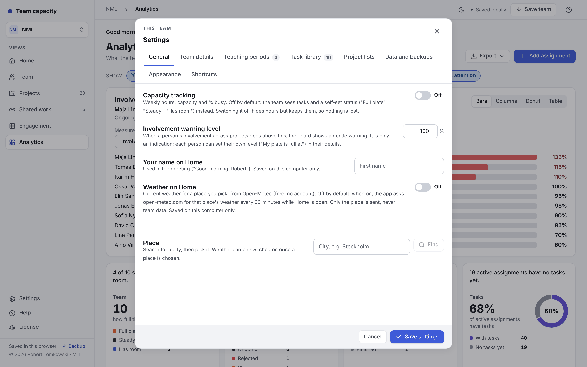

Team capacity: user guide
See who works on what, and how full everyone’s plate is. Team capacity is a planner for research groups and other small teams: people, projects and activities (teaching, supervision, networking), who is on what, with an optional involvement percentage, tasks, milestones and deadlines. It gives the team leader and the team the same picture, as a starting point for conversations rather than a time sheet.
It is one file, Team capacity.html, that you open in
your web browser. There is nothing to install, no account and no server.
Your teams are saved in the browser on your own computer, and you share
them as files.

Contents
- Getting started
- Teams
- People
- Projects and activities
- Assignments, involvement and tasks
- Milestones, deadlines and timelines
- Shared work across projects
- Engagement and Analytics
- Settings
- Saving, sharing and backups
- Exports
- Tips and questions
1. Getting started
What you need: the file
Team capacity.html and a web browser. Google
Chrome, Microsoft Edge, Arc or Opera work
best, because they can keep writing to a team file in a shared folder.
Safari and Firefox work too, but each save downloads a new copy (see
section 10).
- Download
Team-capacity.zipfrom the website and unzip it, or saveTeam capacity.htmlon its own. Put it somewhere you can find again, for example in your team’s OneDrive folder. - Double-click it. The first time, it opens with Northfield (demo), a fictional team of ten people with research projects, courses and meetings, so you can look around straight away.
- When you are ready, click the team name at the top of the menu and choose Create new team (empty, or with three example people to replace).
- Click Save team in the top bar now and then, and keep the file in a shared folder so colleagues can open it (section 10).
The menu on the left has the pages Home,
Team, Projects, Shared
work, Engagement and
Analytics, with Settings,
Help and License at the bottom. Press
? for the keyboard shortcuts, for example / to
search and 1 to 6 for the pages. The moon or
sun button in the top bar switches between light and dark.
Indications, not measurements
The numbers in the app (involvement, workload, task counts) are there to start a conversation: “you look very full, is that right?”. They do not measure anyone’s effort or productivity, and weekly hours are switched off unless the team asks for them (section 9).
2. Teams
The app can hold several teams side by side, for example your research group and a centre you coordinate. Click the team name at the top of the menu to:
- switch to another team;
- Create new team, empty or with example data;
- Load team from JSON file: a team file a colleague saved is added next to your teams;
- Merge a colleague’s file into the team you have open (section 10);
- Add demo team: the fictional Experimental Engineering team of 24 people with illustrated portraits, 13 research projects in two research centres, four courses and guest lectures;
- remove a team with the bin button. The app asks first and offers Download a copy first; the message that follows has Undo. The last team cannot be removed.
Home shows the team’s details (abbreviation, full name, organisation, description, focus areas, lead, website and email). Fill them in with Edit team details. Above them, a short list says what may be worth a look: people above their full-plate level, milestones that are overdue or due soon, projects past their end date or without people, and who has room. Each line links to the place where you can act on it.
3. People

Team lists everyone, with the team coordinator first
in a gold frame. Click a person to see their card: role, involvement per
project, deadlines and milestones in the next three months, how full
their plate is, and their assignments with tasks. Add someone with
Add person (or P).
A person has a name, an optional role, an optional photo (cropped and shrunk to about 15 kB) and two things that are theirs to say:
- How full is the plate? Full plate, Steady or Has room. The person’s own word counts: someone above the warning level who says Steady shows in amber as a question, not in red.
- My plate is full at, for example 80% for someone part time or 50% for an industrial PhD candidate. Without it the team’s warning level applies (Settings, General).
The Team page has three layouts (side by side, big cards and a list) and can be sorted by name, role or involvement. The download button on a person’s card gives their card as a PDF, Excel workbook, picture (PNG) or PowerPoint slide (a picture, or an editable slide built from text boxes).
4. Projects and activities

Projects holds two kinds of work, switched with the tabs at the top:
- Research projects, which move through stages: Proposal (writing), Submitted, Granted or Rejected, Ongoing and Finished, or Planned for internal work without an application. The edit dialog opens only the dates that matter for the stage: application, funding decision, proposed period, contract period with extensions, and closing.
- Activities: Teaching (one or more teaching periods, weekdays and times, or variable days), Supervision (a time span), Networking (a single meeting, a recurring meeting or an event) and Other. A recurring meeting can be weekly on chosen days, every 1 to 4 weeks, or monthly.
Every project or activity can have a type, funder, research centre, abbreviation and full title, a PI (or course responsible, supervisor and so on), a description and its own task groups (Writing, Measurement, Data analysis, …). Tick Add the whole team for things everyone attends, such as a weekly meeting.
Projects can be shown as cards (click one for its overview), a list with a Next deadline column, a timeline and a milestones list. Filter by type, stage, team member, year, funder or centre, and sort by name, stage, dates or next deadline. Your own types, funders and stages are set in Settings, Project lists.
Extensions. On an ongoing project, Add extension sets a new end date with a reason. The original end is kept, and the dialog offers to move the open milestones and deadlines that sat at the old end.
5. Assignments, involvement and tasks

An assignment says that a person works on a project
or activity. Add one with Add assignment (or
A), from a person’s card, from a project’s overview, or by
clicking a cell on the Engagement page. It has:
- a status: Planned, Ongoing or Finished. Only ongoing work counts towards someone’s involvement, unless you ask for planned work too;
- an optional involvement in percent of full time (an indication, not a timesheet);
- task groups the person does there, each with an optional percentage and a numbered list of detailed tasks to tick off (paste a list and it is split into lines);
- an optional description, for example “WP2 lead, lab tests”.
If you pick a person and project that already have an assignment, the dialog says so and shows what would change before it saves.
6. Milestones, deadlines and timelines
Any project or activity can have dated points: a milestone (something reached, such as “Test rig ready”) or a deadline (something due, such as “Mid-term report”). Add them in the project dialog under Milestones and deadlines, and tick them off wherever they are listed: Home, the project overview, a person’s card and the Milestones layout on Projects. When a date changes, the point remembers it and shows “Moved from …”.
The timeline on Projects (and on a person’s card)
draws each project on a shared year axis with a red line for today:
application writing, waiting for the decision, the proposed period, the
contract period and each extension, plus milestones as diamonds and
deadlines as triangles. Teaching periods, meetings and events are drawn
too. Export to Markwhen writes the same timeline as a
.mw text file for the Markwhen editor.
7. Shared work across projects

Shared work is for work that several projects build on, such as a batch of test coupons that one project machines and another measures. Each item lists the projects and tasks that work together on it, the people on those tasks, a status (Planned, In progress, Done) and what it waits on: another shared item, a whole project or one task. You can also connect tasks from the assignment dialog with Connect a task.
The Map layout shows each project as a column with its tasks as boxes: a solid line means the tasks work together, a dashed arrow means one waits on the other. Drag from one box to another to connect them.
8. Engagement and Analytics

Engagement is the whole team against every project and activity as a grid. Each cell shows the involvement (filled for ongoing, outlined for planned, a tick for finished). Click a cell to add, change or remove an assignment.

Analytics collects the charts. The Show chips at the top switch each section on or off: your own chart, the team at a glance, involvement per person, team workload, tasks, people per project and what needs attention. In Your chart you choose a measure (involvement, assignments, projects, people, task groups, open tasks), how to group it (person, project, type, funder, stage, role, research centre) and the chart type (bars, columns, donut or a table). Every chart has a takeaway in plain words above it.
9. Settings

Settings has these tabs:
- General: Capacity tracking (weekly hours, capacity and the Capacity page; off by default), the involvement warning level (100% unless you change it), your name for the greeting on Home, and the optional weather.
- Team details: the same details as Edit team details on Home, plus the team lead and coordinator.
- Teaching periods: the periods of your academic year (names and dates), used by teaching activities. The demo periods are placeholders.
- Task library: the task groups offered in assignments.
- Project lists: project types, funders and stages, with rename, reorder and hide.
- Data and backups: download and load backups, import Excel, auto-save to a file and versions set aside while merging (section 10).
- Appearance: the Calm (cool grey) or Paper (warm off-white) palette. Saved per browser.
- Shortcuts: change or switch off the keyboard shortcuts. Saved per computer.
Weather is the only feature that uses the internet, and it is off until you pick a place. Then the app asks Open-Meteo (free, no account) for that place’s current weather every 30 minutes. Only the place is sent, never team data.
10. Saving, sharing and backups
The app saves every change in the browser you use (IndexedDB), on that computer. That is convenient but not a backup: clearing the browser’s site data, a private window or another browser starts again with the demo team. So keep files:
- Save team (top bar,
Ctrl+SorCmd+S) downloads the open team as a.jsonfile. - Export, All teams (JSON) downloads every team in one file; Backup at the bottom of the menu does the same.
- To open a file, use Load team from JSON file in the team switcher, or Settings, Data and backups.
Working together. Each person opens the app on their own computer; there is no live server. To share one team:
- Put the team’s
.jsonfile in a shared folder, for example OneDrive or Teams. - In Chrome, Edge, Arc or Opera, turn on Settings, Data and backups, Auto-save to a file and choose that file. The app saves every few minutes when something changed. Before each save it reads the file, and if a colleague saved in the meantime it merges their version with yours, record by record (person, project, assignment, shared work). After reopening the app, click Resume auto-save to give permission again.
- In Safari and Firefox, which cannot write to a chosen file, use Merge a colleague’s file to bring in their saved copy.
When the same record was changed on both sides, your version is kept and theirs is set aside under Set aside while merging in Settings, Data and backups, with Use this version to take theirs instead. Nothing is lost silently. Two people editing different fields of the same project at the same time count as a conflict on that project.
11. Exports
| What | Where | Gives |
|---|---|---|
| Team or all teams | Export menu, Save team | .json backup that opens in the app |
| Excel workbook | Export menu | A readable engagement sheet and lists, plus the full plan so it can be imported again |
| Person card | Download button on a person’s card | PDF (print), Excel, picture (PNG) or PowerPoint slide |
| Timeline | Projects, Timeline layout | Markwhen .mw file |
Excel import (Settings, Data and backups) also reads a simple
engagement sheet: a header row starting with Team member, one
row per person and one column per project, with x for
ongoing, p for planned and d for finished.
12. Tips and questions
Is my data sent anywhere? No. Teams live in your browser and in the files you save. The only network request is the optional weather, which sends the chosen place and nothing else. The online version on the website is the same file; it saves in your browser, never on the website.
I opened the app and my team is gone. You are
probably in another browser or a private window, or the browser’s site
data was cleared. Each browser keeps its own copy. Load your last saved
.json file, and turn on auto-save to a file to keep it
current.
Can I track hours? Yes, switch on Capacity tracking in Settings, General. You then set weekly working hours per person, plan hours per assignment and week, and get a Capacity page. Planned hours count as tentative, ongoing hours as committed.
Can people only see their own part? No. Everyone can see and edit everything; the tool is built on trust and avoids micro-management. Each person can export their own card.
Which browsers? Current Chrome, Edge, Firefox, Safari, Arc and Opera. On phones the app works for looking things up; editing is easier on a computer.
Licence. MIT. Made by Robert Tomkowski (rtom@kth.se), developed with the assistance of Claude Code. Source: github.com/rtomkowski/team-capacity.